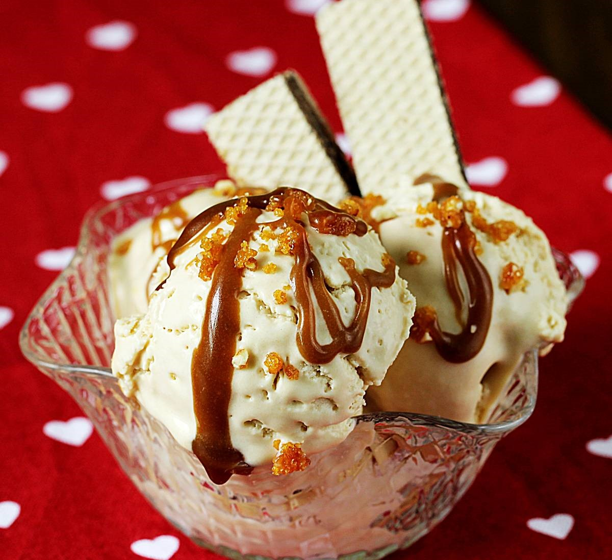

<==
Butterscotch Ice Cream Recipe

Butter and brown sugar meld in this ice cream recipe to create delicious butterscotch flavor.
Ingredients
- 1 cup firmly packed brown sugar
- 2 tablespoons butter
- 1 tablespoon vanilla
- 1 ½ cups whipping cream
- 2 cups half-and-half (light cream)
- 6 large egg yolks
Stepwise Guide!
- In a 1- to 2-quart pan over medium heat, stir brown sugar, butter, and vanilla until butter is melted, sugar is dissolved, and mixture is bubbly, 3 to 4 minutes. Whisk in 1/2 cup whipping cream until smooth; remove butterscotch mixture from heat.
- In a 3- to 4-quart pan over medium-high heat, combine remaining 1 cup whipping cream and the half-and-half; bring to a simmer.
- Meanwhile, in a bowl, beat egg yolks to blend. Whisk 1/2 cup of the warm cream mixture into egg yolks, then pour egg yolk mixture into pan with cream. Stir constantly over low heat just until mixture is slightly thickened, 2 to 4 minutes. Immediately remove from heat.
- Pour through a fine strainer into a clean bowl and whisk in butterscotch mixture. Chill until cold, stirring occasionally, about 2 hours; or cover and chill up to 1 day.
- Freeze mixture in an ice cream maker according to manufacturer's instructions. Serve softly frozen, or transfer ice cream to an airtight container and freeze until firm, at least 6 hours or up to 1 week.